ДЕПАРТАМЕНТ СТРОИТЕЛЬСТВА
НАУЧНО-ТЕХНИЧЕСКОЕ УПРАВЛЕНИЕ
МОССТРОЙЛИЦЕНЗИЯ
ВЕДОМСТВЕННЫЕ
СТРОИТЕЛЬНЫЕ НОРМЫ
ИНСТРУКЦИЯ
по применению укатываемого
малоцементного бетона
в конструкциях дорожных одежд
ВСН 16-95
МОСКВА-1997
Инструкция по применению укатываемого малоцементного бетона в конструкциях дорожных одежд разработана кандидатами технических наук - Я М. Гольдиным, Л. В. Городецким, Р. И. Бега (лаборатория дорожного строительства НИИМосстроя), М.А. Боксерманом (МАДИ).
В инструкции учтен широкий производственный опыт организаций Департамента строительства по строительству дорог в г. Москве.
Инструкция обобщает накопленный за период с 1981 по 1995 гг. опыт службы дорожных одежд на эксплуатируемых улицах и дорогах.
Инструкция согласована с проектным институтом Мосинжпроект, открытым акционерным обществом Мосинжстрой и трестом Гордорстрой
Инструкция разработана при участии Мосстройлицензии (Ю.И. Столяров, к. т. н. В. Д. Фельдман)
СОДЕРЖАНИЕ
|
1. |
||
|
2. |
Конструкция дорожной одежды с основанием из укатываемого бетона |
|
|
3. |
||
|
4. |
||
|
5. |
Требования к земляному полотну, морозозащитному и технологическому слоям |
|
|
6. |
||
|
7. |
||
|
8. |
||
|
9. |
||
|
10. |
||
|
Прочностные характеристики укатываемого бетона |
||
|
Ориентировочные составы малоцементных укатываемых смесей |
||
|
Приспособление для изготовления образцов из укатываемого бетона |
||
|
Необходимый инвентарь и инструменты бригады рабочих по устройству основания из укатываемого бетона |
||
|
Технологическая схема строительства асфальтобетонного покрытия на основании из укатываемого бетона |
||
|
Департамент строительства |
Ведомственные строительные нормы |
|
|
Научно-техническое управление |
Инструкция |
ВСН 16-95 |
1.1. Настоящая инструкция распространяется на устройство основания, а также покрытий, устраиваемых на 1-й стадии строительства проезжей части улиц и дорог в г. Москве из укатываемого малоцементного бетона.
1.2. Укатываемый малоцементный бетон является разновидностью тяжелых цементных бетонов и отличается от них значительно меньшим содержанием цемента и воды. что повышает упругопластические свойства бетона (приложение 1). Для приготовления смеси укатываемого бетона применяется щебень специально подобранного гранулометрического состава.
1.3. Укатываемый малоцементный бетон делится на четыре марки: 1, 2, 3, 4, технические характеристики которых приводятся в разделе 3 "Технические требования к смеси укатываемого бетона".
1.4. Основания из укатываемого бетона устраиваются только после окончания строительства подземных сооружений и прокладки коммуникаций в дорожном полотне ^ тщательного уплотнения его в соответствии с требованиями, указанными ниже.
1.5. Основания из укатываемых малоцементных бетонных смесей следует устраивать в сухую погоду при среднесуточной температуре воздуха: весной не ниже +5 °С, осенью не ниже +10 °С и минимальной суточной температуре выше 0 °С.
Допускается укладка бетонных смесей при отрицательных температурах наружного воздуха до -15 °С; при этом следует руководствоваться рекомендациями п.п. 9.11 - 9.13 настоящей инструкции.
|
Внесены |
Утверждены: "15" 09 1995 г. |
Срок введения в
"1" 10 1995 г. |
2.1. Толщина основания из укатываемого бетона принимается по проекту в соответствии с альбомом "Конструкции дорожных одежд для г. Москвы", СК 61-85 согласно расчетам НИИМосстроя и Мосинжпроекта, а также по индивидуальным проектам, которые должны быть согласованы с авторами альбома.
2.2. Основание укладывается, как правило, по технологическому слою уплотненного щебня толщиной 15 см. в отдельных случаях этот слой устраивается из песчано-гравийной смеси или малоцементной смеси марки 1 толщиной 12-15 см.
2.3. Слой из известнякового щебня следует укладывать на подстилающий (морозозащитный) слой из песка или песчано-гравийной смеси, толщина которого устанавливается проектом с учетом гидрогеологических особенностей прилегающих территорий.
2.4. По основанию из укатываемого малоцементного бетона укладывается асфальтобетонное покрытие в 2-3 слоя в соответствии с проектом.
2.5. Принципиальные схемы типовых конструкций дорожных одежд с основанием из малоцементного укатываемого бетона представлены на рис. 2.1. Конструкция "а" предназначена для строительства на улицах и дорогах местного значения, конструкция "б" - для строительства на скоростных и магистральных дорогах и улицах, "в" и "г" - для стадийного строительства одежд в районах массовой жилой застройки.
2.6. В основаниях из укатываемых бетонных смесей швы расширения не устраивают.
В основаниях из укатываемых бетонных смесей марок 1 и 2 швы сжатия не устраивают.
2.7. При толщине асфальтобетонного покрытия 12 см и менее швы сжатия в зависимости от принятой технологии укладки бетонной смеси устраивают в свежеуложенном или затвердевшем бетоне марок 3 и 4 через 12и 10м.
2.8. В конце рабочей смены или при перерыве в бетонировании более 2-х ч в бетонных основаниях устраивают поперечные рабочие швы без армирования.
Рабочий шов устраивается с помощью швеллера или упорного бруса толщиной 8 и 10 см, устанавливаемых заподлицо с поверхностью уплотняемого слоя на всю ширину полосы бетонирования.
Упорное приспособление крепят штырями к нижнему слою основания, вдоль него вручную выравнивают слой бетонной смеси и уплотняют поперечными проходами катка.
Перед возобновлением укладки упорное приспособление удаляют и торец бетона смазывают разжиженным битумом.
Рис. 2.1. Конструкция дорожных одежд с основаниями из малоцементных укатываемых бетонных смесей:
1 - асфальтобетон мелкозернистый или песчаный; 1а - асфальтобетон мелкозернистый типа А или Б; 2 - асфальтобетон крупнозернистый, мелкозернистый, песчаный, плотный; 2а - асфальтобетон плотный крупнозернистый типов А, Б по ГОСТ 9128-84 и типов 1, П по ТУ 400-24-107-91*; 3, За, Зб - цементобетон из укатываемых смесей марок 2, 3, 4 соответственно; 4 - щебень М 400; 5 - песчано-гравийная смесь; 6 - цементобетон марки 1 или цементогрунт; 7 - песок
Рис. 2.2. Конструкции поперечных швов:
а, г - шов сжатия, устраиваемый в процессе бетонирования: б - шов сжатия с нарезкой паза в затвердевшем бетоне; в - рабочий шов; 1 - основание из укатываемого бетона: 2 - нижний слой основания: 3 - деревянная прокладка: 4 - фиксирующие скобы: 5 - паз шва, нарезанный в затвердевшем бетоне или организованный в свежеуложенном бетоне и заполненный герметиком; 6 - обмазка битумом
2.9. Поперечные швы сжатия устраивают по следующим вариантам:
а) с нарезкой паза шва в затвердевшем бетоне (рис. 2.2б);
б) с установкой деревянной прокладки в процессе бетонирования.
По второму варианту следует перед распределением бетонной смеси на технологическом слое при помощи фиксирующих скоб установить деревянную прокладку толщиной 10-20 мм и шириной, равной 2/3 толщины укладываемого слоя (рис. 2.2а). В процессе эксплуатации дороги над прокладкой образуется трещина по типу ложного шва.
2.10. При ширине проезжей части до II м продольные швы не устраиваются, а при большей ширине устраиваются по аналогии с рабочими швами.
3.1. Смеси укатываемого бетона делятся на четыре марки (табл. 3.1.). Выбор марок укатываемого бетона для конструктивных слоев дорожных одежд различных типов должен быть обоснован проектом и соответствовать данным, приведенным в таблице 3.1.
|
Марка укатываемого бетона |
Предел прочности на |
Назначение |
|
|
при сжатии |
на растяжение при изгибе |
||
|
1 |
75 |
10 |
Для тротуаров, технологического слоя |
|
2 |
100 |
16 |
Для улиц и дорог общегородского и районного значения (в том числе скоростных дорог магистральных улиц) |
|
3 |
200 |
24 |
Для двухстадийного строительства улиц и дорог в районах массовой жилой застройки |
|
4 |
300 |
32 |
|
3.2. Марка укатываемого бетона для основания по морозостойкости должна быть не ниже 50 для марки 1 и не ниже 100 для марок 2, 3, 4.
3.3. Контролируемая прочность укатываемого бетона в возрасте 28 дней должна быть в пределах: 75-80 кгс/см2 для марки 1; 100-110 кгс/см2 для марки 2; 200-215 кгс/см2 для марки 3; 300-320 кгс/см2 для марки 4.
3.4 Содержание воды в смеси назначается из условия получения жесткости смеси 90-120 сек. определяемой техническим вискозиметром. Содержание воды в смеси должно составлять 6-7 % от массы сухих компонентов. Ориентировочные составы смесей приведены в приложении 2.
3.5. Для улучшения физико-механических показателей укатываемого бетона в бетонную смесь следует вводить тонкодиспергированную битумную эмульсию в количестве 30-40 % от массы цемента. Состав эмульсии (считая на сухое вещество): битум БНД 40/60 - 50 %, вода - 48.5 %. эмульгатор - сульфитно-спиртовая барда (ССБ) - 1,5 %.
3.6. Бетонная смесь должна быть однородной, хорошо перемешанной и не должна расслаиваться.
3.7. Укатываемые бетоны приготавливаются в основном на цементе марки 400. Расход цемента для приготовления бетонной смеси приведен в табл. 3.2.
|
Марка |
Расход цемента, кг на 1 м3 бетона |
|||
|
марка бетона |
||||
|
1 |
2 |
3 |
4 |
|
|
300 |
80-90 |
110-120 |
||
|
400 |
70-80 |
90-100 |
230-250 |
250-300 |
|
500 |
200-225 |
225-250 |
||
4.1. Для приготовления бетонной смеси разрешается применять материалы, удовлетворяющие требованиям соответствующих ГОСТов и настоящей "Инструкции" (ГОСТ 7473-85*, 25192-82*, 26633-91, 8267-93, 8736-85. 10178-85*. 24640-91, 23732-79 и др.).
Цемент
4.2. Для приготовления бетонной смеси рекомендуется применять портландцемент марки 400-500. удовлетворяющий требованиям ГОСТ 10178-85.
Песок
4.3. Песок может употребляться природный (горный, речной) в чистом виде и с добавлением, а также песчано-гравийные смеси при условии их рассева. В качестве добавок разрешается применять искусственные пески (продукт дробления прочных морозостойких пород), каменную мелочь и высевки. При наличии в песке зерен гравия или щебня размером более 5 мм свыше 10 % необходимо вносить корректировку в состав смеси, учитывая эти включения как крупный заполнитель.
4.4. Модуль крупности песка должен быть не менее 2. Природный песок по зерновому составу должен применяться только крупный или средний в соответствии с требованиями ГОСТ 8736-85 и ГОСТ 10268-80*.
4.5. Содержание глины, ила и мелких частиц, определяемых методом отмучивания, не должно превышать 3 %. В песке не должно быть органических примесей.
Щебень
4.6. Крупный заполнитель должен отвечать требованиям ГОСТ 8267-93 "Щебень и гравий из плотных горных пород для строительных работ. Технические условия".
4.7. Для приготовления смеси 1, 2 применяется известняковый щебень, щебень из гравия и гравий с пределом прочности при сжатии не менее 40 МПа (400 кгс/см2) и маркой по дробимости 24.
4.8. Зерновой состав щебня (гравия) должен удовлетворять данным, приведенным в табл. 4.1.
|
Размер сит, мм |
Полный остаток на сите в % для щебня наибольшей крупности |
|
|
40 |
70 |
|
|
80 |
0 |
0 |
|
70 |
0 |
0-5 |
|
60 |
0 |
5-20 |
|
50 |
0 |
20-40 |
|
40 |
0-5 |
40-50 |
|
30 |
5-40 |
50-70 |
|
20 |
40-70 |
70-90 |
|
10 |
70-95 |
90-95 |
|
5 |
95-100 |
95-100 |
|
менее 5 |
100 |
100 |
4.9. Для приготовления смесей 3 и 4 применяется фракционированный щебень 5-10, 10-20, 20-40 мм из горных пород по прочности на сжатие не ниже 600, по дробимости не более 16. Допускается применение щебня непрерывной гранулометрии 5-40 мм. Ориентировочный состав для щебня с наибольшей крупностью 40 мм приведен в табл. 4.2.
|
Наибольшая крупность щебня, мм |
Содержание фракций, % |
||
|
5-10 |
10-20 |
20-40 |
|
|
40 |
15-25 |
20-35 |
40-55 |
4.10. Битумная эмульсия должна отвечать требованиям ГОСТ 18659-81 "Эмульсии дорожные битумные. Технические условия".
Вода
4.11. Для приготовления смеси укатываемого бетона применяется водопроводная вода. Вода из открытых водоемов может быть применена после специальной проверки. Общее содержание растворимых солей в воде должно быть не более 5000 мг/л. Содержание ионов SO4 должно быть не более 2700 мг/л. водородный показатель рН должен быть не менее 4.
5.1. Перед устройством морозозащитного слоя должны быть выполнены все работы по засыпке траншей с заданным уплотнением (коэффициент уплотнения должен быть 0,98-1,00) в соответствии со СНиП II-60-90 "Планировка и застройка городов и сельских населенных пунктов. Нормы проектирования". Особенно тщательно должно производиться уплотнение вокруг колодцев подземных сетей.
5.2. Коэффициент уплотнения земляного полотна из связных грунтов на скоростных дорогах и магистралях общегородского и районного значения должен быть 0.98.
5.3. Производство работ по устройству морозозащитного и технологического слоев должно осуществляться согласно СНиП II-60-90 только после приемки земляного полотна с оформлением соответствующего акта.
5.4. Коэффициент фильтрации (К) песков для морозозащитного слоя при ширине дна корыта до 12ми поперечном уклоне (однозначном) i = 0,02 должен быть 3-6 м/сут., а при ширине более 12 м и 1=0,03, К ³ 6 м/сут.
5.5. Технологический слой устраивается из известнякового щебня прочностью не менее 400 кгс/см2, песчано-гравийной смеси слоем толщиной 15 см (в плотном теле) или малоцементного укатываемого бетона марки 1 слоем 12-15 см.
5.6. Технологический слой из щебня устраивается путем распределения его щебнеукладчиком или автогрейдером способом "от себя", уплотняется 5-12 тонными моторными катками (сначала легкими, потом тяжелыми) и увлажняется поливомоечной машиной. При устройстве слоя толщиной до 15 см следует применять щебень следующего гранулометрического состава: 40-20 мм - 40-60 %, 20-5 мм - 45-35 %, 5 мм - 5-15 % или следующего состава: 70-40 мм - 40-50 %, 40-20 мм - 30-40 %. 20-5 мм- 20-10 %, менее 5 мм-5-10 %.
5.7. Для устройства технологического слоя из песчано-гравийной смеси следует применять смесь следующего состава: 5-40 мм- 50-70 %, 0,071 мм -5 мм - 30-50 %, мельче 0,071 мм - 5-7 %. Песчано-гравийная смесь доставляется к месту работ автомобилями-самосвалами и разгружается непосредственно в корыто дороги. После выгрузки смесь разравнивается способом "от себя" бульдозером или грейдером до образования слоя толщиной 16-18 см.
5.8. Распределительный слой песчано-гравийной смеси уплотняется катками с поливкой водой. Коэффициент уплотнения песчано-гравийной смеси должен быть не менее 0,98.
6.1. Приготовлять бетонную смесь следует на стационарных бетонных заводах в бетономешалках свободного падения или принудительного действия. Время перемешивания в бетономешалках свободного падения указано в табл. 6.1.
|
Вместимость бетономешалки, л |
Время перемешивания, с |
|
425 |
80-90 |
|
1200 |
150-180 |
|
2400 |
200-220 |
Приготовление смесей марок 3 и 4 следует производить в бетономешалках принудительного перемешивания в течение не менее 80 сек.
6.2. Битумная эмульсия вводится в бетонную смесь одновременно с водой затворения.
6.3. Общее количество воды, необходимое для обеспечения проектной удобоукладываемости бетонной смеси, в этом случае уменьшается на количество введенной эмульсии.
6.4. Для подачи битумной эмульсии в смеситель следует использовать систему подачи солевых добавок или аналогичную ей.
6.5. Чтобы избежать расслоения битумной эмульсии, ее необходимо перемешивать один раз в 4-5 дней и перед употреблением.
6.6. Приготовление и контроль битумной эмульсии должны производиться в соответствии с ГОСТ 18659-81 "Эмульсии дорожные битумные".
6.7. При приготовлении бетонной смеси первоначально в работающий смеситель вводят песок, затем цемент, крупный заполнитель, воду затворения и химические добавки.
6.8. Однородность жесткой бетонной смеси определяют по коэффициенту вариации при испытании контрольных кубов и балочек. При несоответствии однородности по прочности (см. 9.12) производят корректировку состава бетонной смеси и времени ее перемешивания.
6.9. Дозировку материалов для приготовления жесткой (укатываемой) бетонной смеси производят по массе в соответствии с ГОСТ 7473-85.
6.10. Предел прочности при сжатии бетона из жесткой (укатываемой) бетонной смеси определяют на образцах-кубах размером 15´15´15 см, а при растяжении при изгибе на образцах-балках размером 15´15´40 см, которые формуют на стандартной лабораторной виброплощадке в формах с пригрузом 32 г/см2.
Контрольные образцы испытывают в возрасте 28 сут. после хранения в условиях, аналогичных условиям твердения бетона в дорожной одежде.
6.11. Интервал времени от выпуска жесткой (укатываемой) бетонной смеси до окончания уплотнения не должен превышать начала срока схватывания цемента.
6.12. Время транспортирования смеси укатываемого бетона не должно превышать 60 минут. Время после выпуска смеси до ее окончательного уплотнения в основании не должно превышать 120 минут.
При транспортировании смеси в сухую погоду необходимо предохранять ее от потери влаги, а в сырую - от переувлажнения.
6.13. Запрещается в течение одной смены с одной бетономешалки выпускать смесь укатываемого бетона и бетон других видов и марок.
6.14. Бетонная смесь должна доставляться на строительный объект в автобетоносмесителях или в самосвалах с кузовами, очищенными от грязи, с задней разгрузкой, без прицепов. Доставка смеси должна осуществляться по часовому графику, разработанному с учетом производительности укладочных машин.
6.15. Выпускаемая с завода жесткая бетонная смесь сопровождается накладной с указанием адреса предприятия-изготовителя, даты и времени отправки бетонной смеси, адреса объекта, обозначения в соответствии с настоящими техническими условиями.
7.1. До начала работ по устройству основания из укатываемого бетона должны быть проверены исправность и готовность укладочных и уплотняющих машин и механизмов, а также обеспеченность необходимыми материалами для ухода за свежеуложенной смесью.
7.2. Укладка смеси должна осуществляться бетоноукладчиками на пневматическом или гусеничном ходу при работающем вибробрусе, а также модернизированными щебнеукладчиками.
На участках площадью менее 1000 м2 где невозможно применение указанных машин, укладка смеси может производиться экскаватором типа Э-153 с навесным оборудованием.
7.3. Толщина распределенного слоя должна быть на 15-20 % больше толщины уплотненного слоя и уточняется по ходу работы.
7.4. Укладка бетонной смеси ведется от бортового камня к оси проезда. Движение укладочных машин в продольном направлении должно происходить навстречу уклону, если он больше 30 %.
7.5. Укладку смеси при ширине дороги до 9 м следует вести отдельными захватками длиной 40-50 м с таким расчетом, чтобы разрыв во времени укладки смежных полос не превышал 1 часа во избежание обезвоживания боковой кромки ранее уложенной полосы.
7.6. При ширине дороги более 9 метров укладка смеси должна производиться двумя или тремя бетоноукладочными машинами с опережением одного укладчика относительно другого на 10-15 метров.
7.7. Дефекты поверхности основания (впадины и разрывы) свежеуложенной смеси должны устраняться по ходу работы подсыпкой смеси.
7.8. Для уплотнения бетонной смеси следует преимущественно использовать самоходные комбинированные вибрационные катки с пневматическими ведущими вальцами, Уплотнение можно производить также самоходными пневматическими и гладковальцовыми катками.
Катки следует выбирать из условия уплотнения смеси в один слой (табл. 7.1.).
Характеристика катков и режимы уплотнения
укатываемых бетонных смесей
|
Тип катка |
Марка катка |
Масса, т |
Жесткость бетонной смеси, с |
Наибольшая толщина уплотняемого слоя, см |
Число проходов по одному следу |
|
Комбинированный, самоходный, вибрационный |
ДУ-52 |
16 |
90-120 |
30 |
6-8 |
|
ДУ-62 |
13 |
90-120 |
30 |
6-8 |
|
|
ДУ-57 |
14 |
90-120 |
30 |
6-8 |
|
|
ДУ-47Б |
6-8 |
90-120 |
25 |
6-8 |
|
|
Райле-120РМ- |
14, 25 |
90-120 |
35 |
6-8 |
|
|
МС-1" |
9 (10, 15) |
90-120 |
30 |
6-8 |
|
|
Райле-212(Д) |
9,3 |
90-120 |
30 |
6-8 |
|
|
СА-25" |
|||||
|
Самоходный на пневматических шинах, статический |
Д2-29* |
15-30 |
100-110 |
25 |
8-10 |
|
ДУ-31А |
8-16 |
100-110 |
15 |
8-10 |
|
|
Самоходный гладковальцовый статический |
ДУ-98 |
10-18 |
100-110 |
15 |
12-14 |
|
ДУ-51А |
10-13 |
100-110 |
12 |
12-14 |
* Катки Д2-29, ДУ-31А. ДУ-98, ДУ-51А применяются для уплотнения технологического слоя и оснований тротуаров.
7.9. Укатка с перекрытием следа на 15-25 см должна начинаться от обоих бортовых камней к оси проезда при двухскатном профиле; при односкатном - навстречу поперечному уклону. Уплотнение считается достаточным, когда при проходе тяжелого катка на поверхности основания не остается следа. Основание толщиной более 20 см рекомендуется устраивать в 2 слоя с послойным уплотнением.
7.10. Вальцы катков в течение всего времени уплотнения смеси должны быть чистыми и гладкими.
7.11. Остановка катков во время укатки свежеуложенной смеси не допускается.
7.12. Поверхность основания должна быть ровной, без бугров, волн, впадин. При прикладывании 3-метровой рейки просвет не должен превышать 5 мм при механизированной укладке и 7-10 мм при использовании средств малой механизации.
7.13. Температурные швы устраиваются после прохода бетоноукладочной машины в соответствии с рекомендациями п.п. 2.5.-2.10 настоящей инструкции.
7.14. вкладка асфальтобетонного покрытия по основанию из укатываемого бетона, как правило, должна производиться сразу же после завершения уплотнения бетона (перерыв между временем укладки слоев не более 2 часов). В отдельных случаях укладка покрытия по основанию из укатываемого бетона может быть разрешена через 3 дня и позже, но до наступления отрицательной температуры воздуха.
7.15. Открывать движение транспорта разрешается только после устройства асфальтобетонного покрытия на всю проектную толщину.
7.16. При отрицательных температурах воздуха для устройства дорожных одежд из укатываемого бетона рекомендуется применять противоморозные добавки: хлористые соли натрия и кальция (ХН, ХК), нитрита натрия (НН) и нитрит-нитрат-хлорид кальция (ННХК) (табл. 7.2.)
Оптимальное количество
противоморозных добавок для смесей,
твердеющих при отрицательных температурах
|
Температура твердения |
Содержание безводных солей, % от массы цемента |
|||
|
ХН (NaCl) |
ХК (CaCl2) |
НН (NaNO2) |
ННХК |
|
|
-5 |
2 |
2 |
- |
- |
|
-5 |
3 |
- |
- |
- |
|
-5 |
- |
- |
4 |
- |
|
-5 |
- |
- |
- |
2 |
|
-10 |
- |
4 |
- |
3 |
|
-10 |
5 |
- |
- |
- |
|
-10 |
- |
8 |
- |
- |
|
-10 |
- |
- |
6 |
- |
|
-15 |
- |
- |
8 |
- |
|
-15 |
- |
- |
- |
6 |
7.17. Применение холодных укатываемых бетонов допускается только при условии, что в течение первых 15 суток твердения бетона его температура не упадет ниже -10°, а прочность к моменту замерзания будет не менее 50 кгс/см2. Поэтому укладку слоев асфальтобетонного покрытия рекомендуется производить сразу после уплотнения холодного бетона.
7.18. Устройство оснований и покрытий из укатываемого бетона при положительных и отрицательных температурах следует осуществлять бетоноукладочными машинами со скользящими формами.
7.19. Современные бетоноукладочные машины со скользящими формами оснащены электронными автоматическими системами обеспечения проектных геометрических параметров бетонного покрытия (основания). Автоматические системы слежения обеспечивают точность движения машины в плане, заданные продольный и поперечный профили, а также толщину укладываемого слоя. Базой автоматической системы слежения является копирная струна, устанавливаемая с одной или двух сторон бетоноукладчика в зависимости от его конструктивных особенностей.
7.20. Копирная струна должна быть строго параллельна оси дороги. Оптимальная высота установки струны над верхом укладываемого слоя 60-75 см. Расстояние от струны до продольной грани укладываемого слоя должно быть в пределах 65-115 см. Это расстояние обусловлено необходимостью прохода гусеницы машины за пределами укладываемого слоя и длиной консоли с датчиком следящей системы.
7.21. Длина участка с установленной копирной струной должна обеспечивать безостановочную работу укладчика, т.е. быть, как правило, равной длине сменной захватки. Не допускается установка копирной струны участками менее 50 м.
Для отладки рабочих органов бетоноукладчика необходимо обеспечить установку копирной струны за 20 мот начала бетонируемой полосы.
7.22. Установка копирной струны включает следующие операции (рис.7.1.): установку нивелирных колышков; установку металлических стоек и штанг; натяжение копирной струны; контроль качества установки струны.
Рис. 7.1. Схема установки копирной струны:
1 - опорная стойка; 2 - штанга; 3 - струбцина; 4 - гнездо на штанге для струны; 5 - укладываемое покрытие (основание); 6 - укрепленный слой основания; 7 - нивелирный колышек; 8 - песок (размеры даны в см)
7.23. Линию установки копирной струны разбивают при помощи теодолита и нивелира. Закрепляют эту линию нивелирными колышками, которые служат высотными реперами и обозначают линию струны в плане.
7.24. Нивелирные колышки устанавливают на расстоянии 65-115 см от продольного края плиты так, чтобы линия их вершин соответствовала проектной линии верхней кромки бетонной плиты. Нивелирные колышки определяют отметку, от которой измеряется высота установки струны. Струна в плане размещается точно над нивелирными колышками.
Нивелирные колышки на прямолинейных участках улицы устанавливают в начале и конце участка (в пределах видимости) путем разбивки поперечных профилей. На вертикальных и горизонтальных кривых нивелирные колышки устанавливают у каждой стойки.
7.25. Стойки с поперечными штангами забивают в грунт земляного полотна или песчаный слой (рис.7.1.) так, чтобы они стояли прочно и строго вертикально на расстоянии около 30 см от линии нивелирных колышков.
Расстояние между стойками назначают в диапазоне: максимальное - 8 м - на прямолинейных участках: минимальное - 2 м на горизонтальных кривых радиусом менее 200 м и вертикальных - радиусом менее 1000 м.
7.26. Поперечные штанги (2) при помощи струбцин (3) устанавливают перепендикулярно линии струны так, чтобы прорезь штанги находилась над нивелирным колышком (или линией нивелирных колышков) на заданной высоте.
Высоту расположения гнезда штанги над колышками измеряют линейкой-шаблоном; совмещение гнезд со створом нивелирных колышков проверяют по теодолиту.
7.27. Натяжение копирной струны производится вручную. Струна раскладывается вдоль нивелирных колышков, подтягивается и закрепляется на анкерных стойках, забиваемых наклонно на расстоянии 3-4 м от крайних стоек на участке. Затем струну поднимают на всем участке и запасовывают в прорези штанг. Натяжение струны должно быть таким, чтобы на глаз не было заметно ее провисание и не происходила оттяжка струны датчиками следящей системы бетоноукладчика.
После натяжения струны ее положение в плане и профиле контролируют вертикальным шаблоном, нивелиром и теодолитом и корректируют при помощи струбцин на стойках и поперечных штангах.
7.28. Для строительства цементобетонных покрытий и оснований используют высокопроизводительные бетоноукладчики на гусеничном шасси. Блок рабочих органов бетоноукладчика включает: неподвижный отвал-дозатор, шнек-распределитель, пакет глубинных вибраторов, трамбующий брус и выглаживающую плиту (рис. 7.2).
Формование бетонной плиты осуществляется в скользящих формах (скользящей опалубке), отделяющих рабочие органы от гусеничных тележек (рис. 7.2). Таким образом, гусеничные тележки перемещаются за пределами бетонируемой полосы.
|
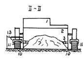 |
|
Рис. 7.2. Бетоноукладчик со скользящими формами:
1 - рама машины; 2 - неподвижный отвал-дозатор; 3 - шнек; 4 - глубинные вибраторы; 5 - трамбующий брус; б - выглаживающая плита; 7 - укладываемая смесь; 8 - готовое бетонное покрытие (основание); 9 - основание; 10 - скользящие формы; II - гусеницы: 12 - копирная струна; 13 - следящие датчики
7.29. Бетоноукладчики обеспечивают переменную ширину укладки бетонной смеси, как правило, в диапазоне 2,5-5,0 м. При работе с автомобилями-самосвалами из технологических соображений целесообразно принимать ширину укладки основания не менее 4,5 м
Строительство бетонных оснований на всю ширину проезжей части можно осуществлять последовательно по следующим схемам (рис. 7.3): строительство односкатного покрытия (основания) за один проход бетоноукладчика (местные проезды, тротуары) (рис. 7.3а); последовательная укладка смежных полос с перемещением одной гусеницы бетоноукладчика по ранее уложенной полосе (рис. 7.36); укладка полос через одну с перемещением бетоноукладчика сначала по основанию, затем по уложенным полосам бетона (рис. 7.3в).
Рис. 7.3. Схема строительства основания из укатываемого бетона бетоноукладчиками со скользящими формами:
а - с укладкой одной полосы; б - с последовательной укладкой двух полос; в - с укладкой полос через одну
7.30. Движение бетоноукладчика осуществляется по технологическому слою из щебня или укрепленного цементом материала, устроенного на 160 см шире укладываемого покрытия или основания (рис. 7.1, 7.3). При укладке бетонного основания на песчаный слой следует использовать временные инвентарные колейные покрытия для движения гусениц бетоноукладчика. На рис. 7.3. представлена схема строительства цементобетонного основания бетоноукладчиками со скользящими формами.
7.31. По бетонному основанию разрешается пропуск бетоноукладчика по схемам "б" и "в" (рис. 7.3.) через трое суток после строительства и при прочности бетона на сжатие не менее 10 МПа.
Движение технологического транспорта по бетонному основанию разрешается открывать при наборе им прочности не менее 70 % от марочной, но не ранее чем через 7 суток после его строительства. При более ранних сроках открытия движения по бетонному основанию (но не ранее 3 суток, при прочности бетона не менее 50 % от марочной) должно быть учтено снижение конечной срочности бетона и соответственно увеличена толщина вышележащих слоев одежды.
7.32. Для исключения (или уменьшения) движения технологического транспорта по ранее уложенным полосам бетонного основания рекомендуется доставку бетонной смеси осуществлять навстречу строительному потоку.
7.33. Доставка бетонной смеси производится по часовому графику для обеспечения безостановочной работы бетоноукладчика. Бетонная смесь подается на полотно перед бетоноукладчиком (т.е. выгружается непосредственно на основание) по двум вариантам: с непосредственным заездом автомобиля-самосвала или автобетоносмесителя на технологический слой; с боковой разгрузкой смеси из автобетоносмесителя без заезда его на основание.
7.34. Выгрузка бетонной смеси производится, как правило, по оси укладываемой полосы на определенном (для данной ширины и толщины плиты) расстоянии друг от друга. Расстояние между зонами выгрузки устанавливается на месте машинистом бетоноукладчика из условия, чтобы излишек бетонной смеси не затруднял движение укладчика, обеспечивалось заглубление вибраторов в бетонную смесь и формование ровной, без раковин поверхности плиты. Исходя из этих требований уровень бетонной смеси перед отвалом-дозатором укладчика должен быть примерно на 20 см выше проектной отметки поверхности укладываемой полосы.
7.35. Перед началом бетонирования машинист укладчика обеспечивает установку всех рабочих органов и скользящих форм в проектное положение по высотным отметкам и заданному поперечному профилю. Высотное положение глубинных вибраторов окончательно регулируется в процессе работы машины.
7.36. Предварительное распределение бетонной смеси осуществляется
отвалом-дозатором (рис. 7.2.), который сдвигает излишки бетонной смеси в продольном направлении. Окончательное распределение смеси по ширине бетонируемой полосы обеспечивается шнеком бетоноукладчика.
Бетонную смесь следует распределять равномерным слоем по всей ширине укладываемой полосы с учетом коэффицента ее уплотнения Ку = 1,10-1,15, то есть на 2-3 см выше проектных отметок.
7.37. Уплотнение бетонной смеси производится глубинными вибраторами; доуплотнение поверхностного слоя - трамбующим брусом (рис. 7.2).
Для обеспечения качественного уплотнения машинист бетоноукладчика регулирует скорость движения машины, параметры работы вибраторов и шнека в зависимости от подвижности бетонной смеси. При этом рабочая скорость движения машины составляет от 0,5 до 3.0 м/мин.
7.38. С целью обеспечения высокого качества основания бетоноукладчик должен двигаться непрерывно со скоростью, обеспечивающей проработку смеси и отделку ее поверхности. Время с момента приготовления смеси до окончания ее уплотнения не должно превышать 2 часов.
7.39. Предварительная отделка поверхности осуществляется рабочими органами бетоноукладчика (рис. 7.2): трамбующим брусом и выглаживающей плитой. Окончательная отделка осуществляется вручную и включает следующую операцию - затирку неровностей и раковин.
7.40. Отделку поверхности бетонного основания необходимо проводить сразу после прохода бетоноукладчика и заканчивать до начала ухода за свежеуложенной бетонной смесью, но не позже чем через 1 ч после ее уплотнения.
8.1. В случае разрыва во времени между укладкой основания и асфальтобетонного покрытия в сроки, указанные в п. 7.14. должен быть налажен уход за бетоном и обеспечено сцепление между слоем бетона и слоем асфальтобетона. При наборе прочности в укатываемом бетоне проходят обычные процессы гидратации цемента, поэтому цель и способы ухода за свежеуложенным укатываемым бетоном аналогичны уходу за свежеуложенным пластичным бетоном. Основными задачами ухода являются предупреждение испарения влаги с поверхности, создание и поддержание влажностного режима, защита от механических повреждений.
8.2. Для предупреждения испарения влаги уплотненное основание должно без промедления укрываться пленкообразующими материалами: битумной и битумолатексной эмульсией в два слоя с обшим расходом до 0,7 кг на 1 м2 или другими пленкообразующими и рулонными укрывающими материалами.
8.3. В зависимости от температуры воздуха во время строительства следует принимать нормы расхода пленкообразующих материалов по табл. 8.1.
|
Пленкообразующий материал |
Норма расхода материала (г/м2) |
|
|
< 25 °С |
³ 25 °С |
|
|
Помароль |
400 |
600 |
|
Лак этиноль |
600 |
800 |
|
Битумная эмульсия |
600 |
1000 |
|
Суспензия алюминиевой пудры |
50 |
70 |
|
Известковое молоко |
600 |
1000 |
8.4. Распределение пленкообразующих жидкостей производят методом распыления с использованием электрических, механических и ручных краскопультов и опрыскивателей, а также самоходным малогабаритным
распределителем ТГ-200, смонтированным на грузовом мотороллере.
Перед применением все пленкообразующие жидкости тщательно перемешивают, а битумную эмульсию подогревают до температуры 40 - 60 °С.
9.1. Все материалы, применяемые для приготовления бетонной смеси, подвергаются испытаниям согласно действующим ГОСТам и техническим условиям.
9.2. Дозировка материалов для приготовления бетонной смеси должна производиться только по весу с точностью:
|
цемент и вода |
± 1 % |
|
песок и щебень (гравий) |
± 2,0 % |
9.3. Составы бетонных смесей подбираются лабораторией дорожного строительства НИИМосстроя. Заводская лаборатория должна контролировать правильность дозировки материалов смеси, продолжительность ее перемешивания, оптимальное водосодержание и корректировать выданный состав в зависимости от изменения влажности песка и щебня (гравия).
9.4. При приготовлении жесткой (укатываемой) бетонной смеси заводская лаборатория контролирует:
- качество исходных материалов;
- фактическую влажность щебня и песка;
- дозировку материалов;
- состав бетонной смеси;
- жесткость бетонной смеси;
- соответствие прочности и морозостойкости бетона требуемому классу.
9.5. Качество материалов для приготовления бетонной смеси (цемента, щебня, песка и добавок) проверяют по паспортам, а также путем отбора проб материалов и последующего их испытания в лаборатории в соответствии со стандартами.
9.6. Контроль качества цемента проводят при поступлении каждой партии, а при длительном хранении - через месяц.
9.7. Контроль качества крупного заполнителя проводят путем определения не менее 1 раза в смену влажности, зернового состава, содержание пылеватых и глинистых частиц, дробимости.
9.8. Контроль качества песка заключается в определении не менее 1 раза в смену влажности, зернового состава, модуля крупности, содержания пылеватых и глинистых частиц.
9.9. Пробу бетонной смеси отбирают на месте приготовления (ЦБЗ) из кузова автомобиля объемом, обеспечивающим не менее двух определений свойств бетонной смеси.
9.10. Концентрацию растворов добавок ПАВ контролируют не менее одного раза в смену.
9.11. Жесткость укатываемой бетонной смеси определяют не менее 2-х раз в смену и при необходимости изменяют количество воды затворения.
9.12. Ежемесячно качество выпускаемой на ЦБЗ бетонной смеси следует оценивать по однородности бетона в результате испытаний контрольных образцов.
В качестве показателя однородности используют коэффициент вариации (показатель изменчивости), определяемый по формуле:
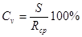
S - среднее квадратическое отклонение;
Rср - среднее арифметическое значение предела прочности бетона.
Среднее арифметическое значение предела прочности определяют по формуле:
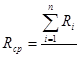
где 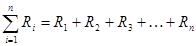
n- число образцов.
Среднее квадратическое отклонение определяют по формуле:
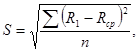
где 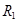
В зависимости от величины коэффициента вариации прочности устанавливают следующие оценки качества бетона на ЦБЗ:
|
отлично |
при Сv £ 10 % |
|
хорошо |
при Сv £ 13,5 % |
|
удовлетворительно |
при Сv £ 15 % |
9.13. Морозостойкость бетона из жесткой (укатываемой) бетонной смеси проверяют в соответствии с указаниями ГОСТ 10060-82*.
9.14. Требуемая прочность на сжатие укатываемого бетона с учетом однородности определяют по формуле:
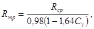
где 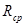
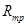
Сv - коэффициент вариации.
9.15. Определяется предел прочности на сжатие кубиков 15´15´15 см. а при изгибе - балочек 15´15´60 см с расчетным пролетом 45 см. При изготовлении кубов и балок смесь уплотняется на лабораторном вибростоле с пригрузом 32 гс/см2. Образцы хранятся в стандартных условиях при температуре 15-20 °С и влажности 95-100 %. Испытание производят в возрасте 7 и 28 дней в соответствии с ГОСТом 10130-82*. При испытании лицевая поверхность балочек должна находиться в растянутой зоне, т.е. должна быть обращена вниз. Для перевода результатов определения предела прочности образцов размером 20´20´20 см на образцы размером 15´15´15 см. полученные результаты умножаются на поправочный коэффициент 1.05.
9.16. Для изготовления образцов отвешивается смесь в зависимости от размера образца и объемного веса бетона в уплотненном состоянии.
9.17. На металлическую форму стандартной конструкции насаживается специальная насадка (форма насадки дана в приложении 3).
9.18. Контроль прочности укатываемого бетона осуществляется на заводе и на строительном объекте. Каждая серия их трех контрольных образцов отбирается не реже одного раза в смену при выпуске до 200 м3 смеси и два раза в смену, если выпускается более 200 м3.При испытании контрольных образцов размером 15´15´15 см и 15´15´60 см поправочный коэффициент не вводится.
9.20. Плотность укатываемого бетона определяют путем деления объемного веса керна, выпиленного из основания или полученного засыпкой образовавшейся скважины песком, на теоретический объемный вес примененных материалов, вычисленный по абсолютным объемам. Плотность бетона должна составлять не менее 98 % от максимального теоретического значения плотности смеси. Плотность определяют как среднеее значение для трех замеров на площади 1000 м2.
9.21. Поверхность основания должна отвечать требованиям п. 7.12.
При строительстве бетонных оснований необходимо строго соблюдать технические правила производства работ в соответствии с требованиями нормы и правил техники безопасности СНиП III-4-90.
10.1. Рабочие должны быть обеспечены специальной одеждой и исправным ручным инструментом в соответствии с действующими нормами.
10.2. Рабочую зону необходимо оградить унифицированным ограждением.
10.3. На расстоянии 15 м от ограждения навстречу движению транспорта должны быть выставлены дорожные знаки: "Въезд запрещен", "Движение только направо" или "Движение только налево".
10.4. С наступлением темноты в зоне работ должны быть установлены сигнальные лампы красного цвета. Лампы мощностью до 200 Вт подвешивают на высоте 2,5-3 м, а более 200 Вт - на высоте 3,5-10 м.
10.5. При доставке смеси автомобилями-самосвалами необходимо соблюдать следующие правила:
- при движении самосвала по обочине все рабочие должны находиться на противоположной обочине:
- не разрешается подходить к самосвалу до полной его остановки. В момент разгрузки самосвала запрещается стоять у бункера укладчика и находиться под поднятым кузовом;
- поднятый кузов следует очищать от налипших кусков смеси совковой лопатой или скребком с длинной рукояткой, нельзя ударять по днищу кузова снизу. Рабочим, производящим очистку, запрещается стоять в кузове, на колесах и бортах самосвала;
-при движении самосвала (особенно задним ходом) рабочий, находящийся в безопасной зоне, должен подавать шоферу сигналы.
10.6. Приготовлять и наносить на основание из укатываемого бетона пленкообразующие материалы следует в комбинезонах, брезентовых рукавицах и защитных очках.
Запрещается курить и пользоваться открытым огнем при работе с пленкообразующими материалами, содержащими огнеопасные вещества, а также в местах приготовления и хранения разжиженного битума. При разливе битумной эмульсии запрещается находиться на расстоянии ближе 10 м от распределительных шлангов.
10.7. Ответственность за исправность машин и механизмов, применяемых для устройства оснований из укатываемого бетона, несет начальник участка управления механизации
Прочностные характеристики укатываемого бетона
|
Показатели |
Марка укатываемого бетона |
|||
|
1 |
2 |
3 |
4 |
|
|
Модуль упругости при сжатии Е ´ 103 кгс/см2 |
130 |
140 |
||
|
Предел прочности при изгибе Rизг. кгс/см2 |
10 |
16 |
24 |
32 |
|
Предел прочности при сжатии Rcж. кгс/см2 |
17х) |
20х) |
27х) |
34х) |
|
Коэффициент температурного линейного расширения (d) 10-6 при температурах: |
75 |
100 |
200 |
300 |
|
положительных |
- |
3,03 |
- |
- |
|
от 0° до -2° |
- |
7,03 |
- |
- |
|
- 10° |
- |
6,92 |
- |
- |
|
х) с добавкой 30 % битумной эмульсии |
||||
Примечание. В приложении приведены средние значения, полученные в результате испытаний образцов
Ориентировочные
составы малоцементных
укатываемых бетонных смесей в кг на 1 м3
|
Вид компонента |
На известняковом щебне М-400 |
На гравийном щебне |
На фракционированном щебне М-600 |
|||
|
1 |
2 |
1 |
2 |
3 |
4 |
|
|
Вода |
105-115 |
110 125 |
105-115 |
110-125 |
90-100 |
100-110 |
|
Цемент |
70 |
90 |
70 |
90 |
230 |
280 |
|
М-400 |
- 80 |
-100 |
-80 |
-100 |
-250 |
-300 |
|
М-500 |
- |
- |
- |
- |
200-225 |
225-250 |
|
Щебень |
1470 -1440 |
1440 -1410 |
1460 -1430 |
1430-1400 |
1100 1200 |
1100 1200 |
|
Песок |
680-650 |
650-630 |
670-640 |
650-620 |
800-840 |
740-780 |
Приспособление
для изготовления образцов
из укатываемого бетона
|
Насадка к форме |
Пригруз |
|
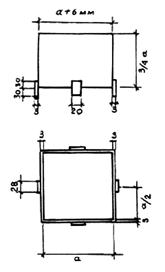 |
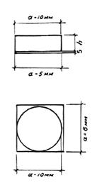 |
Примечание. Высота пригруза (h) принимается из расчета нагрузки 32 г/см2.
Необходимый
инвентарь и инструменты бригады рабочих
по устройству основания из укатываемого бетона
|
№ |
Наименование |
Единица |
Количество |
|
Инвентарь |
|||
|
1. |
Передвижной фургон (бытовка) |
шт. |
1 |
|
2. |
Ограждения деревянные или металлические |
- " - |
12 |
|
3. |
Веревка для ограждения |
п.м. |
500 |
|
4. |
Аптечка |
шт. |
1 |
|
5. |
Бачки для воды |
- " - |
2 |
|
6. |
Кружки эмалированные |
- " - |
10 |
|
7. |
Огнетушители |
- " - |
2 |
|
8. |
Чайник эмалированный |
- " - |
1 |
|
9. |
Переносные светильники |
- " - |
6 |
|
10. |
Ведра |
- " - |
2 |
|
Инструмент |
|||
|
1. |
Рейки 3 - метровые (дюралюминиевые) |
шт. |
2 |
|
2. |
Уровни дюралюминиевые |
- " - |
2 |
|
3. |
Визирки дюралюминиевые |
компл. |
2 |
|
4. |
Лопаты совковые и штыковые с ручками |
шт. |
10 |
|
5. |
Рулетки тесемочные 10-метровые |
- " - |
2 |
|
6. |
Метры металлические |
- " - |
2 |
Технологическая схема
строительства
асфальтобетонного покрытия на основании из укатываемого бетона
|
Этапы работы |
1 |
2 |
3 |
4 |
5 |
6 |
|
Механизмы |
1. Автомашины 2. Автогрейдер 3. Каток моторный массой 5-10 т 4. Поливомоечная машина |
1. Автомашины 2. Бордюроукладчик или трактор с навесным оборудованием |
1. Автомашины 2. Щебнеукладчик или автогрейдер 3. Катки моторные массой 5-12 т (2 шт.) 4. Поливомоечная машина |
1. Автомашины 2.Бетоноукладчик или щебнеукладчик 3. Катки массой 5-16 т (2 шт.) |
1. Автомашины 2. Асфальтоукладчик 3. Катки моторные массой 5-16 т (6 шт.) |
1. Автомашины 2. Асфальтоукладчик 3. Катки моторные массой 5-16 т (6 шт.) |
|
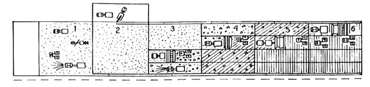 |
||||||
|
Наименование рабочих процессов |
Устройство песчаного подстилающего слоя |
Установка бортового камня |
Устройство щебеночного основания |
Устройство основания из укатываемого бетона |
Укладка нижнего слоя асфальтобетона |
Укладка верхнего слоя асфальтобетона |
Направление работ ®
Примечания: 1. Длина укладываемой полосы бетоноукладчиком, щебнеукладчиком не должна превышать 40 м
2. Норма укладки укатываемого бетона в смену бетоноукладчиком - 350 м3, щебнеукладчиком - 250 м3
3. На небольших участках укладку укатываемого бетона разрешается производить экскаватором Э-153 с навесным оборудованием, а уплотнение (моей - моторными катками. Норма укладки в смену - 120 м3
4. Укладка нижнего слоя асфальтобетонного покрытия производится сразу же после уплотнения укатываемого бетона
1. Альбом СК 61-85 "Конструкция дорожных одежд для г. Москвы". Мосинжпроект
2. ГОСТ 10178-85 "Портландцемент и шлакопортландцемент. Технические условия"
3. ГОСТ 8736-85 "Песок для строительных работ. Технические условия
4. ГОСТ 8267-93 "Щебень и гравий из плотных горных пород для строительных работ. Технические условия".
5. СНиП III-4-80 "Техника безопасности в строительстве".
6. ГОСТ 18659-81 "Эмульсии дорожные битумные. Технические условия".
7. ГОСТ 10060-82* "Метод определения морозостойкости бетона".
8. ВСН 2-94 "Инструкция по конструкциям и технологии строительства дорог в районах массового жилищного строительства".
9. ВСН 51-80 "Инструкция по применению тощего бетона в конструкциях дорожных одежд".
10. ВСН 77-88 "Инструкция по строительству дорожных цементобетонных покрытий и оснований бетоноукладчиками со скользящими формами".